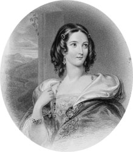
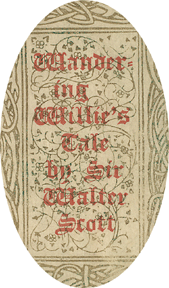

|
|
||||
|
|
Home | Corson Collection | Biography | Works | Image Collection | Recent Publications | Portraits | Correspondence | Forthcoming Events | Links | E-Texts | Contact RedgauntletFirst Edition, First Impression: Redgauntlet. A Tale of the Eighteenth Century. By the Author of "Waverley". In Three Volumes. Vol. I (II-III). Edinburgh: Printed for Archibald Constable and Co. Edinburgh; And Hurst, Robinson and Co., London, 1824. Composition | Sources | Synopsis | Reception | Links Composition
Scott's silence as to the novel he was actually composing -- a silence which verges on deliberate misdirection -- lends support to the widely held view that Redgauntlet is Scott's most deeply personal novel. It offers more parallels with Scott's own life story than any other Waverley Novel. In particular, it draws on Scott's training as a lawyer and preparation for the bar (see Professional Life), on the tour of the Lake District in 1797 when he met his wife (see Williamina, Charlotte and Marriage), and on a professional visit to Dumfries and Galloway in 1807. Many commentators have detected a self-portrait in the young lawyer Alan Fairford, and a depiction of Scott's own father in the sternly Presbyterian Saunders Fairford. Models for Alan's friend Darsie Latimer have been sought in Scott's fellow students William Clerk and Charles Kerr of Abbotrule. Whatever the truth of the novel's genesis, it was composed with Scott's customary speed. Cadell received proofs of the first sixty-four pages on 8 January 1824, so it is likely that Scott began work on the novel at Abbotsford during his Christmas vacation of 1823-24. The first volume was complete by 21 March, the third in process by the beginning of May, and the final pages delivered on 2 June. By 14 June 1824, it was on sale. Scott, though, was slow to settle upon the published title. According to J.G. Lockhart in his Memoirs of the Life of Sir Walter Scott, Bart. (1837-38), Archibald Constable and James Ballantyne faced an arduous task in persuading Scott to adopt Redgauntlet in place of the working title of Herries or Herris. However, G.A.M. Wood and David Hewitt, editors of the recent Edinburgh edition of Redgauntlet (1997), detect no such struggle. They confirm that the published title was suggested by Ballantyne in late April, but note that Scott immediately adopted it with enthusiasm. His only reservation (justified as it turned out) was that it might lead readers to expect a tale of chivalry. As Ballantyne had been in London for most of March and April, and Constable was seriously ill, there can have been no preceding campaign to persuade Scott to abandon Herries. For Wood and Hewitt, the working-title was just that; there is no evidence that Scott was particularly committed to it. SourcesInternal evidence dates the action of the novel to July and August 1765. Following Waverley, The Black Dwarf, Old Mortality, and Rob Roy, Scott once again portrays a Jacobite uprising. This time, however, the rebellion is entirely fictional. By 1765, the Jacobite cause is, in Scott's estimate, defeated and its fictional champion, Redgauntlet, swimming against the tide of history. Prominent Jacobites have made their peace with the Hanoverian regime, and Scots are increasingly embracing the economic and military opportunities presented by Britain's emerging Empire. Victory in the Seven Years' War, concluded in 1763, has seen the eclipse of France's imperial ambitions and the emergence of Britain as the dominant colonial power on the global stage. A major source was William King's Political and Literary Anecdotes of His Own Times. King, former leader of the Jacobites at Oxford University, recounts Prince Charles's clandestine visit to London in 1750 and vain attempts to persuade him to abandon his mistress, episodes echoed in Scott's novel. Scott would also have been aware of rumours that Prince Charles made further visits in 1761 and 1763 and that on the last occasion George III ordered that no action be taken for fear of turning Charles into a martyr. Similar motives lie behind the Hanoverian authorities' decision in Redgauntlet to let the Jacobite conspirators return quietly to the Continent.  SynopsisThe plot revolves around the (purely fictional) return of Prince Charles Edward Stuart to England some years after 1745 in a final attempt to claim the crown. The Jacobite party is energetically led by a Border laird, Redgauntlet, otherwise known as Herries of Birrenswork. He kidnaps his young nephew Darsie Latimer (whose real name is Sir Arthur Darsie Redgauntlet), hoping that his prestige as the head of the house will aid the Jacobite cause. Darsie, whose father was executed for his role in the 1745 rebellion, has been brought up in Edinburgh under an assumed name and in ignorance of his true identity. When informed by Redgauntlet of his family history, he resists all attempts to involve him in the rebellion. Meanwhile Darsie's school-friend the lawyer Alan Fairford (in whom many critics have seen an authorial self-portrait) sets out to rescue him, aided along the way by the Quaker Joshua Geddes, the sea-captain Nanty Ewart, and the blind fiddler Wandering Willie. Both Darsie and Fairford fall in love with the mysterious 'Greenmantle', who lives with Herries as his ward. Redgauntlet fails to whip up sufficient support for the rebellion and the plot is discovered by the government. The Young Pretender is permitted to return to France and his supporters are not pursued. Seeing that his party is no longer regarded as a serious threat, Redgauntlet realizes that the Jacobite cause is finished and accompanies Charles into exile. Darsie is liberated and remains a staunch Hanoverian. Fairford marries 'Greenmantle' who is revealed to be Lilias, Darsie's sister, kidnapped by Redgauntlet in early childhood ReceptionAlthough now regarded as amongst the finest of the Waverley novels, Redgauntlet met with a lukewarm critical and public reaction at its first appearance. There were broadly favourable reviews in the Scotsman and Literary Gazette, both of which particularly praised the embedded Scots narrative generally known as 'Wandering Willie's Tale'. Based on a suggestion by Scott's friend, the exciseman and amateur antiquarian Joseph Train, 'Wandering Willie's Tale' binds together numerous traditional motifs and is widely viewed as one of the world's greatest short stories. Other journals, such as the Edinburgh Magazine and Monthly Review, objected to the mixture of epistolary and narrative sequences and felt that, in all events, the epistolary form was a throwback to the conventions of the eighteenth-century novel. Much harsher were the Examiner and London Magazine, declaring that Scott was now working merely for profit and that it was pointless to subject such productions to critical appraisal. Critical censure was matched by slow sales. Scott, who was firmly persuaded of Redgauntlet's critical merit, remarked to Ballantyne that 'the world wants novelty more than superior excellence' (Letters, VIII, 325).  Links
Last updated: 19-Dec-2011 |
|||